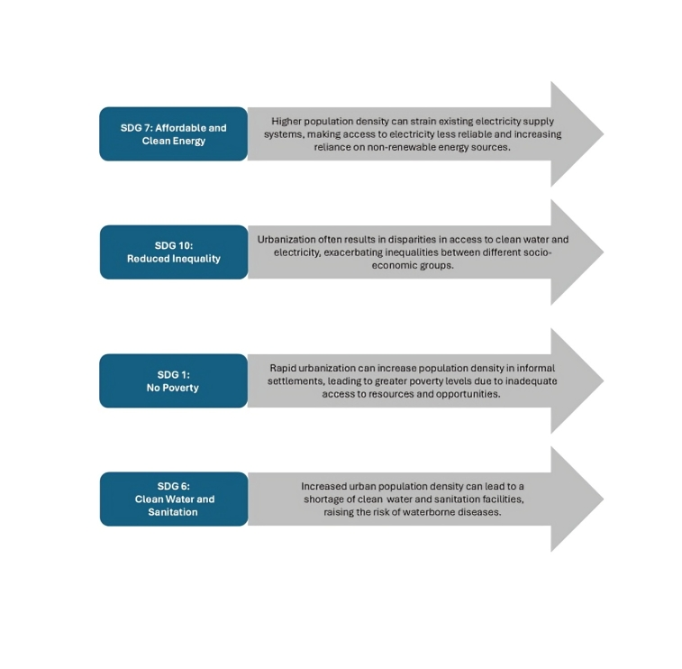

Class : High School/College
Subject : Geography/Environmental Studies/Sustainable Development
Chapter : Urbanization & Sustainable Development
Topic : Challenges and Solutions of Urbanization: Focus on SDG 11
Duration : 60-75 mins
Objectives :
- Analyze the connection between UN guidelines and urbanization challenges.
- Evaluate the effectiveness of current measures and initiatives to address urbanization challenges.
- Create innovative solutions to overcome challenges of urbanization based on SDG 11.
Teaching Aids and Reference(s) :
- Presentation slides
- Video clips on urbanization and SDG 11
- Whiteboard/Projector
- Handouts with SDG 11 and UN guidelines on urbanization
- Internet-enabled devices (optional)
Motivation/Introduction : (5-10 mins)
Pose the question: 'What is urbanization? What comes to mind when you think of growing cities?'
Facilitate a brief brainstorming session, capturing student responses on the whiteboard. Briefly
introduce the key challenges of urbanization (overcrowding, infrastructure deficits, pollution).
Methodology/Presentation : (45-55 mins)
-
Presenter: Introduce UN guidelines addressing urbanization challenges, highlighting
key focus areas. Then, introduce SDG 11 and its targets, emphasizing the aim of creating inclusive,
safe, resilient, and sustainable cities.
(Duration: 10 mins)
-
Audience: Participate in small group discussions. Guiding question: 'How do the
goals of SDG 11 link to the challenges of urbanization we discussed?'
(Duration: 10 mins)
-
Presenter: Present specific challenges related to SDG 11 implementation in the
context of rapid urbanization (e.g., inadequate housing, slum growth, pollution, lack of public
space). Showcase examples of successful global initiatives addressing these challenges (smart
cities, green infrastructure). Discuss the current status of SDG 11 implementation globally and
locally, drawing on reports and statistics.
(Duration: 15 mins)
-
Audience: Divide into groups, each focusing on a specific urbanization challenge
(housing, transportation, waste management, etc.). Brainstorm and develop practical solutions
aligned with SDG 11.
(Duration: 10-20 mins)
Summary (5-10 mins)
Presenter will : Summarize the key challenges and potential solutions discussed,
reinforcing the connection between urbanization, SDG 11, and the importance of innovative and sustainable
urban development. Facilitate a brief class reflection: “How can what we learned today be applied in
real-world scenarios?”
Assessment :
- Observe and facilitate in-class group discussions about UN guidelines and urbanization challenges.
- Provide feedback during group brainstorming and solution development.
- Written reflection on the role of SDG 11 in addressing urbanization challenges.
- Group presentations of proposed solutions, evaluated on creativity and practicality (peer evaluation can
be incorporated).
- Individual or group projects proposing solutions for their local city or neighborhood based on SDG 11
targets.
Urbanization Linkage With Other SDGs
